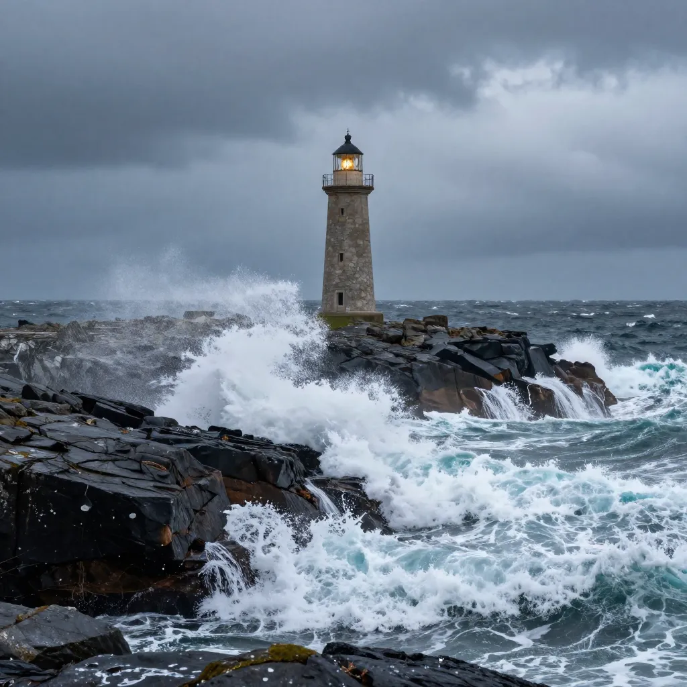
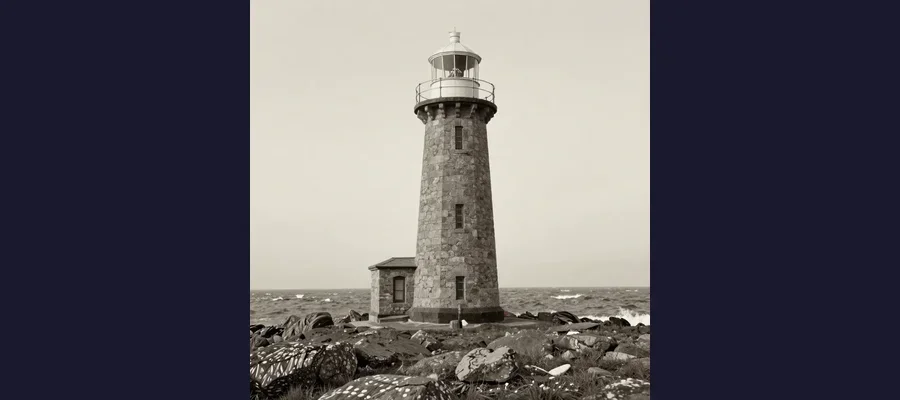
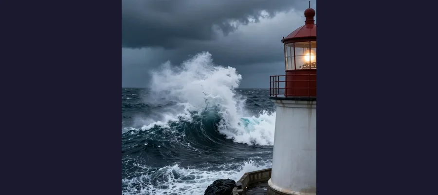

The Flannan Isle Lighthouse Mystery: Three Keepers Who Vanished Without a Trace

The Flannan Isles lighthouse, where three keepers vanished in December 1900, leaving behind an unsolved mystery that endures to this day.
In the bitter winter of 1900, on a wave-battered rock in the wild Atlantic Ocean some 20 miles west of the Isle of Lewis in Scotland's Outer Hebrides, three men vanished from the face of the Earth. The Flannan Isles Lighthouse — a white tower perched on the highest point of Eilean Mor, the largest of a cluster of tiny, uninhabited islands known to mariners as the Seven Hunters — had been lit for barely a year when its entire crew disappeared without a trace. No bodies were ever found. No boat was missing. No struggle was recorded. When the relief ship Hesperus arrived on December 26, 1900, expecting to find three keepers eager for shore leave and fresh provisions, it found instead a cold, dark tower, a locked gate, an untouched meal laid out on a table, and a silence broken only by the endless crash of the Atlantic against the cliffs below. The three lighthouse keepers — James Ducat, the principal keeper; Thomas Marshall, the second assistant; and Donald McArthur, an occasional keeper filling in for a colleague on sick leave — had simply gone. The Flannan Isles mystery remains one of the most haunting disappearances in maritime history, a story that has inspired poems, novels, films, and over a century of speculation about what really happened on that lonely rock in the Atlantic.
The mystery of the Flannan Isles is often grouped with other great vanishing acts of history — the crew of the Mary Celeste, the lost colonists of Roanoke, the hikers of the Dyatlov Pass — but it has a quality all its own. The keepers did not vanish from a ship or a settlement or a forest. They vanished from a lighthouse, a structure specifically designed to be the one fixed, reliable point in a world of darkness and storm. The lighthouse was their prison and their sanctuary. And then one day, it was empty. What makes the Flannan Isles mystery so enduring is not that the explanation is unknowable — in fact, the most likely explanation is quite straightforward — but that the evidence left behind tells a story of chaos and urgency, of men caught by surprise by forces far beyond their control, in a place so remote that no one would even notice they were gone for nearly two weeks.
A Light on the Edge of the World: The Flannan Isles
The Flannan Isles — also known as the Seven Hunters, a name that speaks to their longstanding reputation as a dangerous navigation hazard — are a group of small, rocky islands in the Outer Hebrides of Scotland. The largest, Eilean Mor ("Big Island" in Gaelic), covers roughly 17 hectares and rises to a height of about 65 meters above sea level, with sheer cliffs on its western side plunging directly into the Atlantic. The islands are named after St. Flannan, a 7th-century Irish missionary, and the ruins of a chapel dedicated to him still stand on Eilean Mor's slopes — a reminder that even this desolate rock was once considered a place of spiritual refuge.
The lighthouse on Eilean Mor was designed by David Alan Stevenson of the famous Stevenson engineering family (which also produced the novelist Robert Louis Stevenson) and constructed between 1895 and 1899 at a cost of £1,899 — a considerable sum at the time. Every stone, every beam of timber, every piece of equipment had to be hauled up the 45-meter cliffs directly from supply boats, an engineering challenge in the best of weather. The lighthouse stood 23 meters tall, with its focal plane at 101 meters above sea level, and its light — powered by a third-order Fresnel lens — could be seen for 20 nautical miles in clear conditions. It was first lit on December 7, 1899. Barely a year later, it would be dark.
Life on the Flannan Isles was isolating in the extreme. The three keepers rotated in shifts, maintaining the light and recording weather and sea conditions in the station log. Communication with the mainland was limited to the periodic visits of the Northern Lighthouse Board (NLB) tender ship, which brought supplies, mail, and relief personnel. The islands were surrounded by some of the most dangerous waters in the British Isles, where the full force of Atlantic storms crashed against the cliffs with terrifying power. In winter, the seas could be mountainous, and the wind could reach hurricane force. It was a posting that demanded resilience, discipline, and a deep comfort with solitude.
🏠 The Seven Hunters
The Flannan Isles' alternative name, the "Seven Hunters," is believed to derive from the Old Norse word veur, meaning "storm" or "danger" — a reference to the islands' lethal reputation among the Viking seafarers who navigated these waters a thousand years before the lighthouse was built. The "seven" refers to the seven main islets in the group, of which Eilean Mor is by far the largest. The islands have been uninhabited for centuries, apart from the lighthouse keepers, but archaeological evidence — including beehive-shaped stone shelters and the ruins of St. Flannan's Chapel — suggests that monks or hermits lived there during the early medieval period. The very name of the islands evokes a landscape that has always been on the boundary between the known and the unknown, the habitable and the hostile.

The Flannan Isles lighthouse, first lit on December 7, 1899 — just over a year before its keepers vanished.
The Empty Tower: What the Hesperus Found
On December 15, 1900, a vessel passing the Flannan Isles at around midnight noticed that the lighthouse was dark. The observation was not reported to the Northern Lighthouse Board until after the disappearance had been discovered — a detail that would haunt the investigation. The routine relief ship, the Hesperus, under Captain James Harvey, did not arrive at the Flannans until the afternoon of December 26 — eleven days after the light was last recorded as operational. The delay was not unusual; winter weather frequently disrupted the relief schedule. But what Harvey found when he arrived was anything but routine.
There was no sign of life on the island. No flag flew from the flagpole. No response came to the ship's horn or to a rocket fired from the deck. The relieving keeper, Joseph Moore, was sent ashore. He climbed the steep path from the landing stage to the lighthouse compound and found the gate closed and locked — a detail suggesting that whoever had last left the lighthouse had done so in an orderly fashion, expecting to return. Inside, the lighthouse was cold and dark. The clocks had stopped. The fire was out. The lamps were clean and refilled, ready to be lit — indicating that the keepers had performed their morning duties but had not returned to light the evening lamps. Most eerily, a meal of meat and potatoes sat on the table, untouched. A chair had been overturned. In the entrance hall and on the paths outside, the keepers' oilskins (heavy waterproof coats) were carefully hung on their pegs — all except one set. Two of the three keepers had gone outside without their waterproofs.
Moore reported his findings to Captain Harvey and returned to the island with three additional men. They searched the entire island but found no bodies, no signs of violence, and no clue to the keepers' fate beyond the evidence of a sudden departure. The logbook entries — the last dated December 15 — described severe storms and enormous seas in the days leading up to the disappearance. The investigation by the Northern Lighthouse Board, conducted by Superintendent Robert Muirhead, concluded that the three keepers had been swept into the sea by a massive wave while securing equipment near the west landing during a severe storm. It was the most logical explanation. But the details — the untouched meal, the overturned chair, the missing oilskins, the stopped clocks — painted a picture of sudden catastrophe that captured the public imagination and has refused to let go for over 120 years.
⏰ The Logbook Controversy
The lighthouse logbook became one of the most debated elements of the mystery. The last official entry was dated December 15, 1900, and it described storm conditions. Later accounts — many of them fabricated or embellished — claimed the log contained increasingly frantic entries describing storms of supernatural ferocity, a weeping keeper, and prayers for deliverance. These dramatic entries have never been verified and are almost certainly inventions of the popular press. The Northern Lighthouse Board's official investigation made no mention of any unusual log entries beyond routine weather observations and the recording of severe gale conditions. The gap between the factual logbook and the sensationalized version that entered popular culture is itself a testament to the power of mystery to distort evidence — much like the exaggerated "curse inscriptions" that haunted the discovery of Tutankhamun's tomb.

Modern science has proven rogue waves are real — but in 1900, the idea was dismissed as sailor superstition.
The Three Who Vanished
- James Ducat (Principal Keeper) — An experienced lighthouseman who had served the NLB for years. He was the senior keeper on the station and responsible for the light's operation. He left behind a wife and children on the mainland.
- Thomas Marshall (Second Assistant) — A married man who had previously been involved in a boating accident. His personal life was later scrutinized by those seeking explanations beyond natural causes.
- Donald McArthur (Occasional Keeper) — A married man from Breasclete on the Isle of Lewis, serving as a temporary replacement for the regular first assistant, William Ross, who was on sick leave. His presence on the island that December was a matter of chance.
Rogue Waves and Reason: What Most Likely Happened
The official conclusion of the Northern Lighthouse Board — that the three keepers were swept into the sea by an exceptionally large wave — remains the most widely accepted explanation and, with the benefit of modern oceanographic knowledge, the most plausible. The investigation noted that damage to the west landing — including iron railings bent by enormous force, a storage box washed away, and a rock weighing over a ton displaced from its position — was consistent with the impact of a wave of extraordinary size. The NLB's superintendent, Robert Muirhead, who had personally recruited all three men and knew them well, concluded that Ducat and Marshall had gone down to the west landing to secure equipment during a lull in the storm, and that McArthur, seeing them swept away, had rushed from the lighthouse without his oilskin coat to attempt a rescue and had also been taken by the sea.
This explanation is consistent with the evidence. The untouched meal suggests that the keepers had been preparing to eat when something demanded their immediate attention — a sight from the window, a sound from below, the realization that equipment at the landing was in danger. The overturned chair suggests haste. The missing oilskin — McArthur's — suggests that one man left the lighthouse in such urgency that he did not stop to put on his coat, while the other two had already gone outside properly dressed for the weather. The stopped clocks indicate that no one returned to wind them. The locked gate suggests that whoever left last expected to come back.
🌊 Rogue Waves: Not So Rare After All
For decades, the idea of a single, massive wave capable of sweeping three men off a cliff was met with skepticism. Rogue waves — defined as waves more than twice the significant wave height of the surrounding sea state — were considered maritime folklore, reported by sailors but dismissed by scientists as impossible under standard wave models. That changed in 1995, when the Draupner platform in the North Sea recorded a wave measuring 25.6 meters (84 feet) in a sea state with a significant wave height of only 12 meters — the first scientific confirmation that rogue waves exist. Subsequent research has shown that rogue waves are far more common than previously believed, particularly in areas with strong currents and complex seabed topography. The waters around the Flannan Isles, exposed to the full force of Atlantic storms and characterized by steep underwater slopes, are precisely the kind of environment where rogue waves are most likely to form. Modern oceanographic understanding has retrospectively validated the NLB's conclusion: a massive wave, striking without warning during a severe storm, could easily have swept men from the landing platform into the sea. The ocean, we now know, is capable of producing waves of staggering violence — and it does not always give warning before it strikes. This same unpredictable ferocity is what makes the Bermuda Triangle and the search for lost ships like those near Oak Island so compelling.
- The rogue wave theory — A massive wave struck the west landing while two keepers were securing equipment; the third rushed to help and was also swept away. Supported by physical damage to the landing and consistent with modern rogue wave science.
- The structural failure theory — One or more keepers were washed away by a series of large waves, and the others were lost during rescue attempts. The damaged railings and displaced rock support this.
- The murder-suicide theory — Proposed by some later writers, suggesting one keeper killed the other two and then himself. There is no evidence to support this, and the investigation found no signs of violence.
- The supernatural theory — Fueled by Gibson's poem and popular culture, suggesting ghostly or paranormal forces. No evidence exists to support this interpretation.
- The foreign vessel theory — That the keepers were abducted by a passing ship. Extremely unlikely given the remote location, severe weather, and the absence of any ship in the area.
The Poem That Made a Legend
The Flannan Isles mystery might have remained a footnote in maritime history were it not for the poet Wilfred Wilson Gibson, whose "Flannan Isle" (1912) transformed the disappearance into one of the most famous unsolved mysteries of the sea. Gibson's poem — which describes the discovery of the empty lighthouse with vivid, haunting detail — introduced elements that have become inseparable from the story in the public mind, including the famous lines about the three strange birds that the relief crew found sitting on the rocks, too dazed by the storm to fly. The poem describes the lighthouse as a place of eerie, supernatural absence: "Though three men lived on Flannan Isle / To keep the lamp alight, / As we steered under the lee, we caught / No glimmer through the night." Whether Gibson intended his poem to be taken as factual reportage or literary invention is debated, but its effect on the popular imagination was decisive. The Flannan Isles mystery became not merely a story of three men lost at sea but a Gothic tale of the supernatural, of forces beyond human comprehension striking in the loneliest place imaginable. The poem's influence persists: the 2018 film "The Vanishing" starring Gerard Butler, while taking substantial dramatic liberties, draws directly on the atmosphere Gibson created.
🌊 The Light That Went Dark
The Flannan Isles mystery is, at its heart, a story about the indifference of the sea. Three competent, experienced men were posted to a lighthouse on a rock in the Atlantic. They maintained their light, kept their logs, and did their duty in conditions of extreme isolation and hardship. And then, on or about December 15, 1900, the Atlantic came for them. The most likely explanation — a rogue wave striking without warning during a savage storm — is both the most scientifically sound and the most emotionally devastating, because it offers no villain, no conspiracy, and no redemption. The sea took them, as it has taken countless others, and left behind only an empty tower, an untouched meal, and a mystery that will never be fully resolved because the only witnesses were the ocean and the dead. Like the ghost ship Mary Celeste, the cryptic symbols of the Voynich Manuscript, the unexplained technology of the Antikythera Mechanism, and the vanished treasures of the Amber Room, the Flannan Isles disappearance endures because it sits at the boundary between the known and the unknowable — a boundary that no amount of investigation can fully cross. Three men walked out of a lighthouse and into eternity. The sea kept their secret. The lighthouse, eventually, was relit. The mystery remains dark.
Frequently Asked Questions
What happened to the Flannan Isles lighthouse keepers?
The three keepers — James Ducat, Thomas Marshall, and Donald McArthur — disappeared from the Flannan Isles Lighthouse on or about December 15, 1900. The official investigation by the Northern Lighthouse Board concluded that they were most likely swept into the sea by a massive wave while securing equipment at the west landing during a severe storm. Physical evidence — including bent iron railings, a displaced boulder, and a washed-away storage box at the landing — supported this conclusion. No bodies were ever recovered, and the exact sequence of events remains unknown.
Why were the keepers' meals left untouched?
The untouched meal found on the table in the lighthouse kitchen suggests that the keepers were interrupted by an emergency before they could eat. The most likely explanation is that one of the keepers looked out a window and saw that equipment at the west landing was in danger from the storm. Two keepers went to secure it, wearing their oilskins. The third, Donald McArthur, followed in such haste that he left without his coat. All three were caught by the wave and swept away. The untouched meal is evidence not of something supernatural but of the suddenness with which the catastrophe struck.
Is the Flannan Isles lighthouse still operational?
Yes. The Flannan Isles Lighthouse was automated in 1971 and continues to operate under the management of the Northern Lighthouse Board. It is now powered by solar energy and requires no permanent on-site personnel. The lighthouse remains an active aid to navigation, its light visible for 20 nautical miles, a silent sentinel on the rock where three men vanished over 120 years ago.
Was the Flannan Isles mystery ever solved?
It depends on what one means by "solved." The Northern Lighthouse Board's official investigation reached a conclusion: the three keepers were swept into the sea by an exceptionally large wave during a severe storm. This conclusion is supported by physical evidence at the landing and is consistent with modern understanding of rogue waves. However, because no witnesses survived and no bodies were recovered, the precise sequence of events can never be confirmed with absolute certainty. The mystery remains officially "unsolved" in the sense that the evidence is circumstantial, but the most probable explanation is well established.
📖 Recommended Reading
Want to learn more? Check out The Lighthouse Keepers by Keith McCloskey on Amazon for a deeper dive into this fascinating topic. (As an Amazon Associate, we earn from qualifying purchases.)
References & Further Reading
- Wikipedia: Flannan Isles Lighthouse — Comprehensive account of the lighthouse, the 1900 disappearance, and the NLB investigation
- Northern Lighthouse Board: Flannan Isles — Official NLB account of the disappearance including the investigation report and keeper details
- Wikipedia: Flannan Isles — Geography, history, and wildlife of the Seven Hunters
- Wikipedia: Rogue Wave — Modern oceanographic understanding of the phenomenon that likely caused the tragedy
- The Mull Explorer: The Flannan Isles Mystery and the Three Men Who Vanished — Detailed analysis of the evidence and the enduring speculation
- Wikipedia: Wilfred Wilson Gibson — The poet whose "Flannan Isle" immortalized the disappearance in popular culture
- Britannica: Flannan Isles — Geographic and historical overview of the island group
Editorial note: reconstructions are continuously revised as imaging and inscription studies improve. See our Editorial Policy.